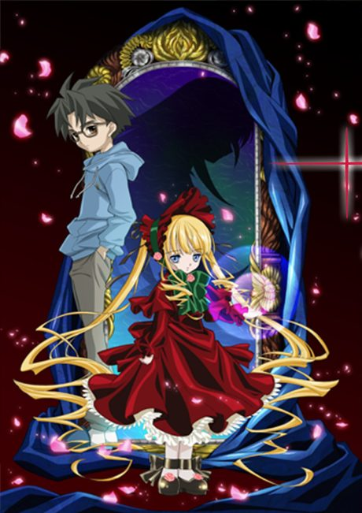
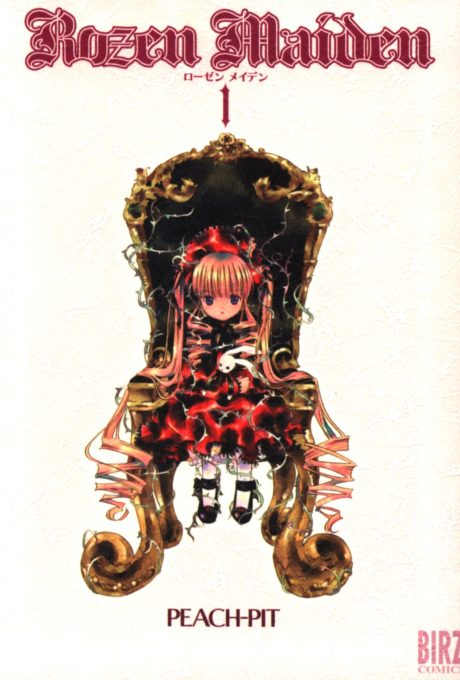

Anime
Manga2004 · Action, Comedy, Drama
Rozen Maiden
ローゼンメイデン
AniList7.1
Animeter—
3 seasons37 ep
MangaUnclear
Anime finished. Where does the manga pick up?
StatusNo source yet
We looked for where the anime ends in the manga but found no source we trust yet. The manga is 46 chapters, finished.